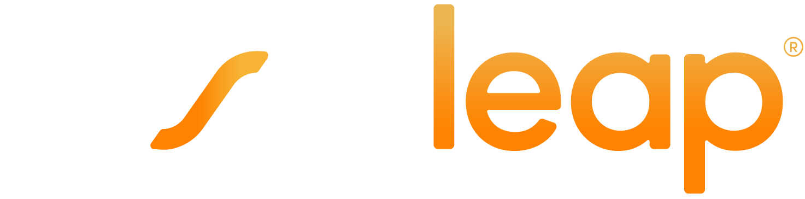

Trusted by



Thodin LLC
We help product and engineering leaders make clear, confident technology decisions—architecture, scaling, and delivery—without adding permanent headcount.
Independent, vendor-neutral technology consultancy. No job too small.
Trusted by


What we do
We partner with startups and established organizations to clarify their technology stack and delivery processes.
Design or refine system architecture with a focus on reliability, observability, and cost control.
Identify bottlenecks, simplify systems, and create a realistic roadmap from "works for now" to "scales by design."
Neutral technical assessments for investors, acquirers, and leadership teams.
Improve how teams plan, ship, and learn—without heavyweight bureaucracy.
How we work
Every engagement is direct, fast-moving, and focused on decisions that actually change outcomes.
Clarify what success means in business terms: revenue, risk reduction, timeline, or runway.
Assess architecture, code, infra, and team practices—no blame, just facts.
Prioritize high-leverage decisions and design practical options, with trade-offs made explicit.
Stay close as teams implement, adjusting plans based on what reality says.
Experience
Senior-level experience across cloud-native systems, high-throughput data pipelines, and modern product engineering teams.
Selected work
A B2B SaaS company was experiencing frequent outages as customer growth accelerated. We performed an architecture review and guided the rollout of observability and incident practices.
Result: Significant drop in downtime and regained customer trust ahead of funding.
A product team was stuck between a risky full rewrite and an aging monolith. We helped them identify a phased strangler-pattern approach.
Result: De-risked path forward, measurable progress within weeks.
An investor group needed a clear view of technical risk in a data-heavy product. We delivered an independent assessment of architecture and team practices.
Result: Informed negotiation and no surprises after closing.
Who we work with
No client or project is too small. A quick architecture review, a second opinion on a hire, a one-hour strategy call—we're here to help.

Get in touch
Share a bit of context and we'll respond with honest next steps.
Or email us directly at info@thodinllc.com